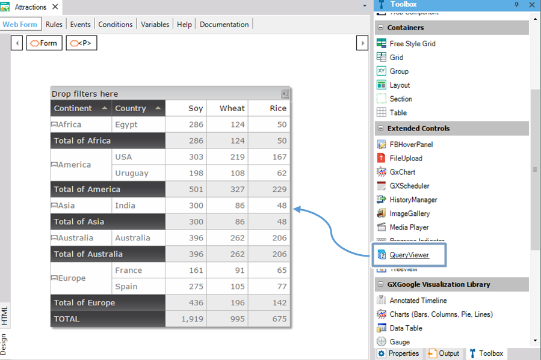
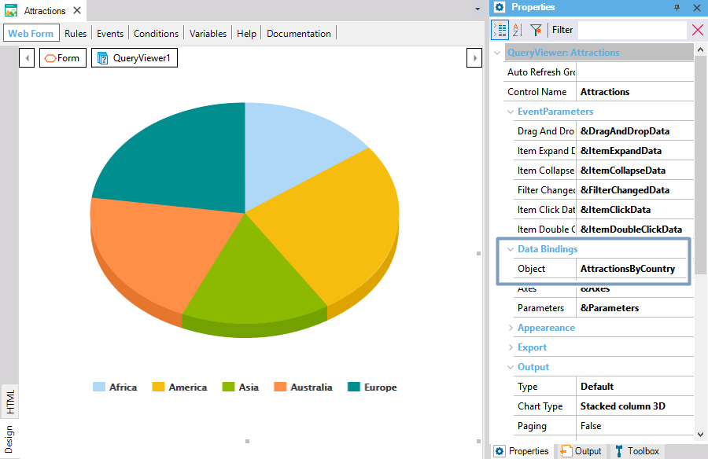
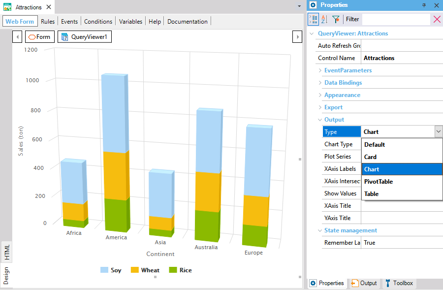
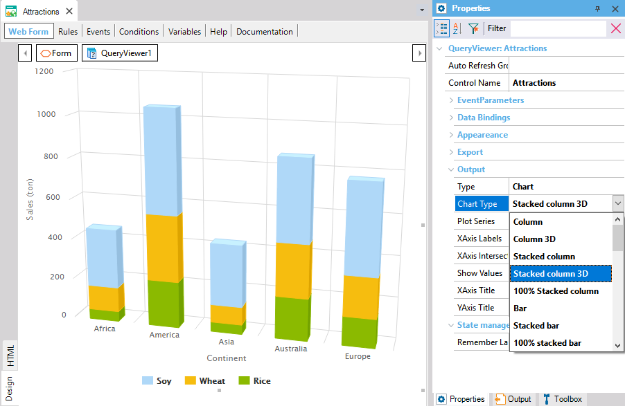
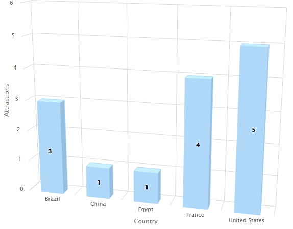

QueryViewer is a user control that must be included in a Web Panel or Panel for mobile applications, in order to allow viewing the data obtained as a result of executing a Query object or a Data Provider object. The possible viewing options are:
Important note: the support for mobile applications is available since GeneXus 17
Note: attributes can be hidden in the Table and Pivot Table just by right-clicking upon the right corner of the attribute. In the Pivot Table case, remember that if all the Data attributes are hidden, the Quantity field will appear without having the possibility to hide it.
The following steps show how to work with this control for a web application, for mobile applications, works in the same way.
1) Drag the QueryViewer control from the Toolbox onto the Web form.

2) Set in the QueryViewer Object property which Query object or Data Provider object will generate the displayed data.

3) Set the Type property, below the Output group. This allows you to select one of the four ways in which the output can be displayed:

In the case of selecting the Chart option, you can choose a specific type of chart by setting the Chart Type property:

Suppose you set the following QueryViewer properties:
This is enough for executing the object that contents the QueryViewer control to see the result at runtime.
In addition to that, you may set another QueryViewer properties. For example, the following properties related to a column chart:
As a result, the following query is displayed in runtime:

Note: Upon the first time that a QueryViewer control is dragged to a web form in a Knowledge Base, GeneXus will include the QueryViewer folder containing the Structured Data Type necessary for using the control, as well as a set of new GeneXus Domains. Also, a set of variables is automatically created in the object Variables section, and a sample source is added in the Object Events section. Such code is intended to guide you in using and setting the control at runtime.
Now see a series of scenarios you could find when using the QueryViewer control.
New views of a single query are possible by changing the value shown of one participant in the query (Query Element). This is done by passing parameters between the QueryViewer control and the query.
Through the associated variable in the Axes property, it is possible to change programmatically some of the properties that have effects on the control’s view.
It is possible to change the query associated with the control by replacing it with a different one, by altering the control’s Object property, as in the following example:
Event Start
Attractions.Object = AttractionsByCountry(<Parameter1>, <Parameter2>, ...)
EndEvent
In this example, Attractions is the QueryViewer control’s name, Object is the control’s property that stores the name of the Query object that performs the query, and AttractionsByCountry is the name of that Query object. The same applies if the associated object is a Data Provider object.
If a Data Provider object is associated with the Quer Viewer, aggregation can be changed by code using the QueryViewerElements.Element Aggregation field.
The default aggregation is Sum.
Please refer to QueryViewer control properties.
| DragAndDrop Event | Allows programming actions when an action drag and drop is found. |
| ItemExpand Event | Allows programming actions when the user expands a Query Element that contains nested data. |
| ItemCollapse Event | Allows programming actions when the user collapses a Query Element with nested data. |
| FilterChanged Event | It is executed every time that values are removed from or added to the list of possible values for an attribute, whether it’s located in the rows, columns or pages area. |
| ItemClick Event | It is executed upon clicking on a query element. |
| ItemDoubleClick Event | It is executed upon double-clicking on a query element. (This event is not supported in case you are executing the control in a mobile device) |
| GetMetadata() | Returns a QueryViewerElements type object which contains the list of attributes (properties included). (More information about Elements Property) |
| GetData() | Returns an XML on a string variable containing all the data for the attributes loaded in the Pivot Table. |
| GetFilteredData() | Returns an XML on a string variable containing the data which is being visualized at the moment (the difference with the GetData() method it's seen on the Pivot Table, data can be different because of filters application). |
| NotifyMetadata() | Makes a list of attributes (properties included). This method doesn't return an object as a result but generates a QueryViewerElements type variable that can be captured later by a TrackContext event. |
| NotifyData() | Load all the data referenced by the attributes loaded in the Pivot Table. This method doesn't return an object as a result but generates a variable that can be captured later by a TrackContext event. |
| NotifyFilteredData() | Load the data which is being visualized at the moment with filters application (can be different from the data loaded by the method NotifyData()). This method doesn't return an object as a result but generates a variable that can be captured later by a TrackContext event. |
As an example of usage, see how to save/restore metadata to/from the Database. To do so, you define the following events at the Web Panel where the QueryViewer is embedded:
Saving the metadata:
Event 'NotifyMetadata'
QueryViewer.NotifyMetadata()
Endevent
Event TrackContext(&Metadata)
SaveMetadata(&Metadata)
EndEvent
Restoring the metadata:
Event Refresh
&Axes = RestoreMetadata()
EndEvent
Notes:
QueryViewer control compatibility